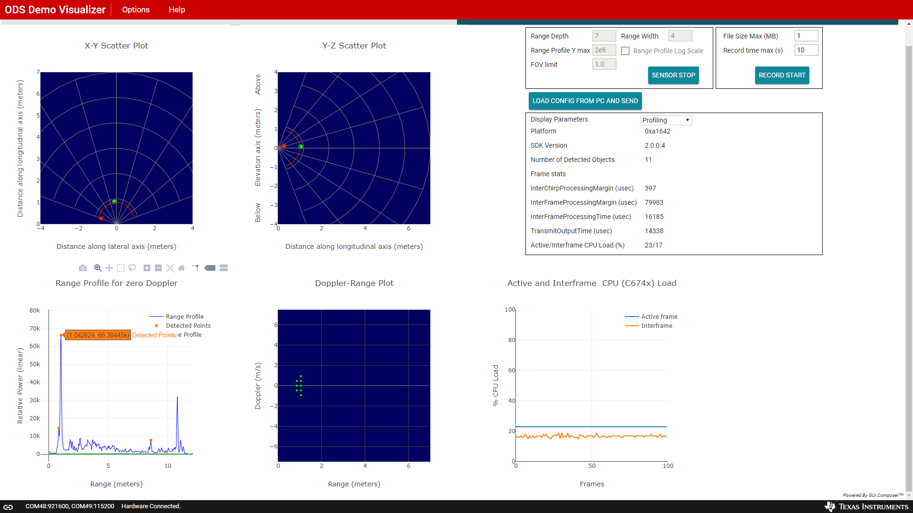
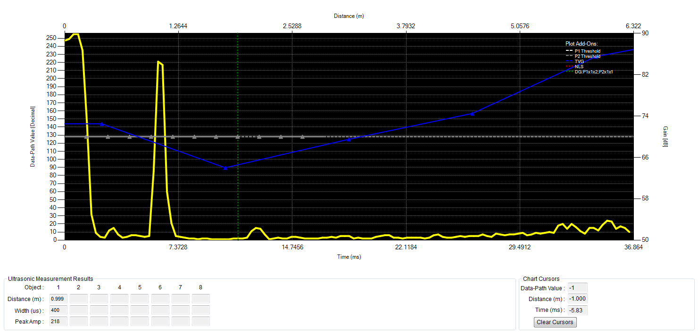
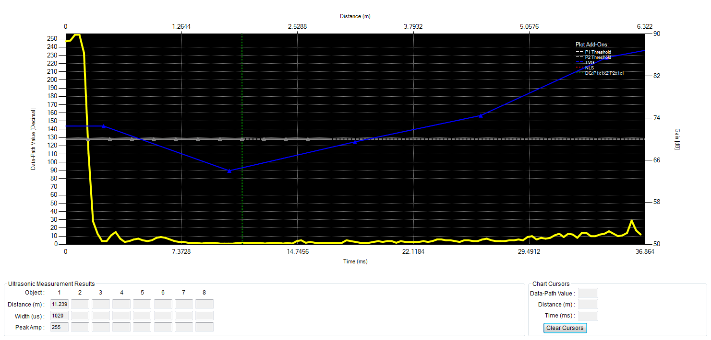
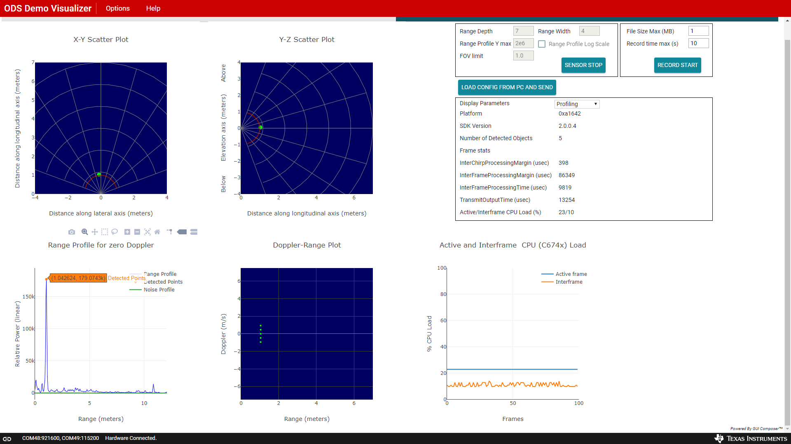
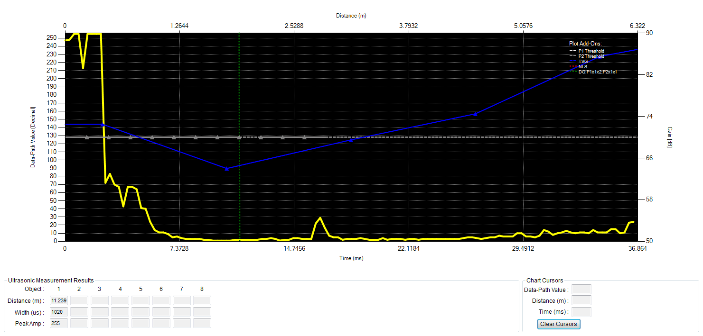
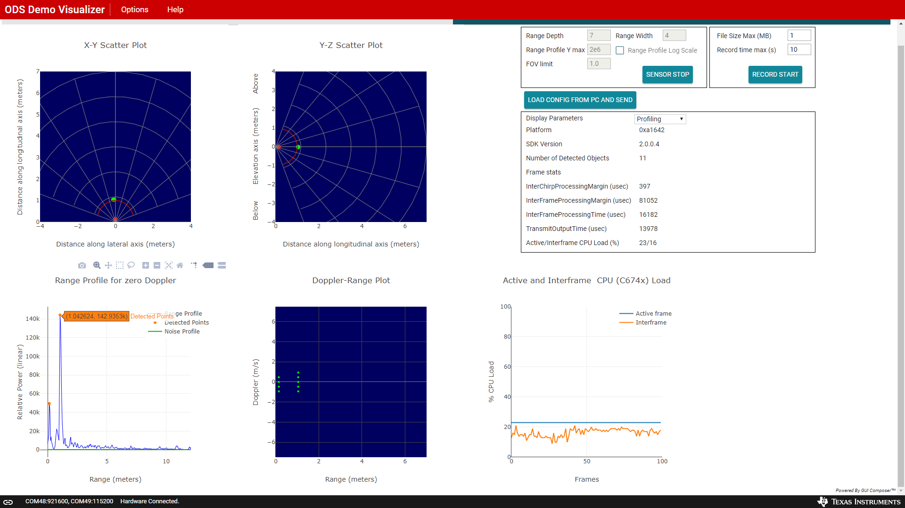
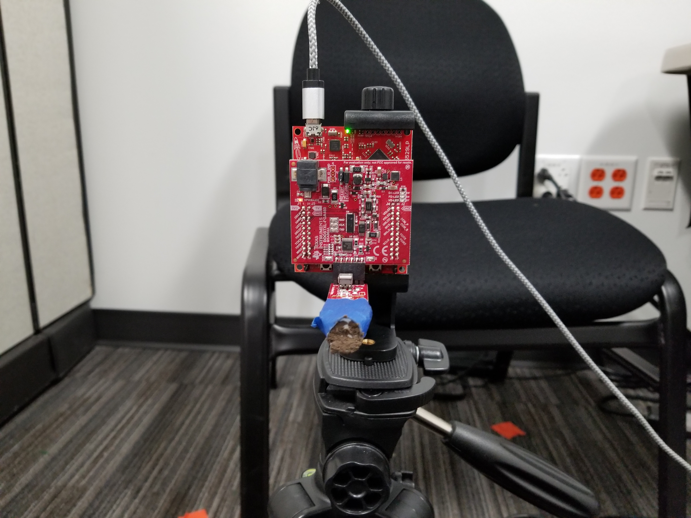
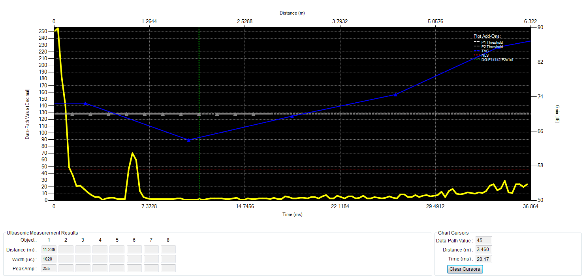

Introduction
===========
The objective of this experiment is to evaluate the ability of TI's mmWave sensors to detect obstacles in scenarios that are challenging for ultrasonic sensors. Some of these environments include:
* Sensor detecting objects at distances less than 10 centimeters
* Sensor detecting objects at distances greater than 10 meters
* Sensor located behind a protective glass panel
* Sensor exposed to dust or mud
This experiment demonstrates that the TI mmWave sensors are able to detect obstacles at various distances, in various environments, and from behind material panels. This experiment provides side by side comparisons of the mmWave sensor and the ultrasonic sensor results.
Setup
===========
<p>
The setup for this experiment can be divided into two parts, namely physical setup and software setup.
</p>
Physical Setup
-----------
The physical setup includes information about the setup environment such as the distance between the target and the sensor antenna, the type of target used, hardware setup and any other physical considerations.
<ol>
<li>
Tests were conducted in a laboratory room.
</li>
<li>
An [AWR1642BOOST-ODS EVM](http://www.ti.com/tool/awr1642boost-ods) was mounted vertically using a tripod as shown in the picture below.
</li>
<li>
An ultrasonic sensor was mounted vertically using a tripod as shown in the picture below.
</li>
<li>
A metal pole was placed vertically in front of both sensors at different ranges.
</li>
</ol>
<br><br>
<table class="table table-striped table-bordered">
<tbody>
<tr>
<td>
<div class="content-wrapper"><p><span><img style="height:250;" src="resource/mmWave_0degrees_0p62meters.jpg" class="img-responsive">Figure 1. mmWave EVM Setup in Laboratory Room</span></p></div><td colspan="1">
<div class="content-wrapper"><p><img style="height:250;" src="resource/Ultrasonic_0degrees_0p62meters.jpg" class="img-responsive">Figure 2. Ultrasonic EVM Setup in Laboratory Room</p></div></td>
</td>
</tr>
</tbody>
</table>
<p><br></p><p><br></p>
Software Setup
-----------
The software setup information includes information about the SDK version, chirp configuration, GUI visualizer and any other software considerations.
<ol>
<li>
The [AWR1642BOOST-ODS EVM](http://www.ti.com/tool/awr1642boost-ods) flashed with the mmWave SDK 2.0 [ODS binary](http://dev.ti.com/tirex/#/?link=Software%2FmmWave%20Sensors%2FAutomotive%20Toolbox%2FLabs%2FObstacle%20Detection) and connected to a Windows laptop running the [ODS Demo Visualizer](https://dev.ti.com/gallery/view/mmwave/ODS_Demo_Visualizer/ver/1.0.0/).
</li>
<li>
The chirp configuration used for obstacles at:
<ul>
<li>
distances less than 10 meters: <a href="resource/mmwave_ods_demo.cfg" class="btn btn-primary">mmwave_ods_demo_chirp.cfg</a>
</li> <br>
<li>
distances greater than 10 meters: <a href="resource/mmwave_ods_demo_10m_chirp.cfg" class="btn btn-primary">mmwave_ods_demo_10m_chirp.cfg</a>
</li>
</ul>
</li>
<li>
The ultrasonic sensor connected to a Windows laptop running a GUI visualizer
</li>
</ol>
<br><br>
Method
===========
The following sections describe the methods used to carry out each of the eight test scenarios.
<br><br>
For the mmWave Sensor, the following procedure was used:
<br>
<ol>
<li>
Create the physical setup for the specified test setup
</li>
<li>
Flash the ODS Demo binary onto the AWR1642BOOST-ODS EVM and connect the EVM to the host PC
</li>
<li>
Launch ODS Demo Visualizer on the host PC and setup the Visualizer using the provided configuration file as shown below:
<ol>
<li>
<b>Platform:</b> xWR16xx
</li>
<li>
<b>SDK Version:</b> 2.0
</li>
<li>
<b>Desired Configuration:</b> Defined by the configuration file
</li>
<li>
<b>All Other Settings:</b> Defined by the configuration file
</li>
<li>
Download the configuration file
<ul>
<li>
When the object is placed at a distance less than 10 meters away use: <a href="resource/mmwave_ods_demo.cfg" class="btn btn-primary">mmwave_ods_demo_chirp.cfg</a>
</li> <br>
<li>
When the object is placed at a distance greater than 10 meters away use: <a href="resource/mmwave_ods_demo_10m_chirp.cfg" class="btn btn-primary">mmwave_ods_demo_10m_chirp.cfg</a>
</li>
</ul>
</li>
<li>
Go to the <b>Plots</b> tab on the Visualizer and click the "<b>Load Config From PC and Send</b>" button
</li>
<li>
Select the downloaded configuration file and press "<b>Open</b>".
</li>
</ol>
</li>
<li>
Analyze the X-Y and Y-Z Scatter Plots along with the Range Profile to see if the object appears at the expected distance.
</li>
<li>
Repeat step 4 as needed based on the test setup
</li>
</ol>
Boresight Configuration
-----------
In this test configuration, the metal pole was placed at various distances directly in front of the sensor. The distances used in this setup include:
* 0.62 meters
* 0.05 meters
* 1 meter
* 2 meters
* 10 meters
This configuration corresponds to tests #1-#5 in the "Results" section.
### mmWave Boresight Setup
<img src="resource/mmWave_0degrees_1meter.jpg" width="350"/> |  |
----------------------------------------------------------------|-------------------------------------------------------------------|
Figure 3. mmWave Boresight Configuration (1 meter) | Figure 4. mmWave Boresight Configuration GUI Results (1 meter) |
### Ultrasonic Boresight Setup
<img src="resource/Ultrasonic_0degrees_1meter.jpg" width="350"/>|  |
----------------------------------------------------------------|----------------------------------------------------------------------|
Figure 5. Ultrasonic Boresight Configuration (1 meter) | Figure 6. Ultrasonic Boresight Configuration GUI Results (1 meter) |
Angle Configuration
-----------
In this test configuration, the metal pole was placed at a fixed distance of one meter 30 degrees off the sensor.
This configuration corresponds to test #6 in the "Results" section.
### mmWave Angle Setup
<img src="resource/mmWave_30degrees_1meter.jpg" width="350"/> | <img src="resource/mmWave_30degrees_1meter_GUI.png" width="450"/> |
----------------------------------------------------------------|-------------------------------------------------------------------|
Figure 7. mmWave Angle Configuration | Figure 8. mmWave Angle Configuration GUI Results |
### Ultrasonic Angle Setup
<img src="resource/Ultrasonic_30degrees_1meter.jpg" width="350"/>|  |
-----------------------------------------------------------------|-----------------------------------------------------------------------|
Figure 9. Ultrasonic Angle Configuration | Figure 10. Ultrasonic Angle Configuration GUI Results |
Glass Configuration
-----------
In this test configuration, the metal pole was placed at fixed distance of one meter directly in front of the sensor. A panel of glass was also placed in front of the sensor.
This configuration corresponds to test #7 in the "Results" section.
### mmWave Glass Setup
<img src="resource/mmWave_0degrees_1meter_withglass.jpg" width="350"/> |  |
------------------------------------------------------------------------|----------------------------------------------------------------------------|
Figure 11. mmWave Glass Configuration | Figure 12. mmWave Glass Configuration GUI Results |
### Ultrasonic Glass Setup
<img src="resource/Ultrasonic_0degrees_1meter_withglass.jpg" width="350"/> |  |
----------------------------------------------------------------------------|--------------------------------------------------------------------------------|
Figure 13. Ultrasonic Glass Configuration | Figure 14. Ultrasonic Glass Configuration GUI Results |
Dirt Configuration
-----------
In this test configuration, the metal pole was placed at a fixed distance of one meter directly in front of the sensor. A thin layer of dirt was applied to the panel of glass placed immediately in front of the mmWave sensor. A thin layer of dirt was applied to the transducer of the ultrasonic sensor.
This configuration corresponds to test #8 in the "Results" section.
### mmWave Dirt Setup
<img src="resource/mmWave_0degrees_1meter_withdirt.jpg" width="350"/> |  |
------------------------------------------------------------------------|----------------------------------------------------------------------------|
Figure 15. mmWave Dirt Configuration | Figure 16. mmWave Dirt Configuration GUI Results |
### Ultrasonic Dirt Setup
 |  |
----------------------------------------------------------------------------|--------------------------------------------------------------------------------|
Figure 17. Ultrasonic Dirt Configuration | Figure 18. Ultrasonic Dirt Configuration GUI Results |
<br><br>
Results
===========
The results from the steps listed in the previous section are presented in a summary table below.
Test # | Distance | Angle | Additional Impediment | Detected with Ultrasonic | Detected with mmWave
--------|----------|-------|-----------------------|--------------------------|---------------------
1 | 0.05 m | 0 deg | None | ✖ | ✔
2 | 0.62 m | 0 deg | None | ✔ | ✔
3 | 1 m | 0 deg | None | ✔ | ✔
4 | 2 m | 0 deg | None | ✖ | ✔
5 | 10 m | 0 deg | None | ✖ | ✔
6 | 1 m | 30 deg| None | ✖ | ✔
7 | 1 m | 0 deg | Glass | ✖ | ✔
8 | 1 m | 0 deg | Dirt | ✖ | ✔
<br><br>
Conclusion
===========
Using the AWR1642BOOST-ODS EVM, we can detect a target objects at a variety of distances, both close up and far away. Additionally, the AWR1642BOOST-ODS EVM can detect objects that are not directly in front of it. The AWR1642BOOST-ODS can also compensate for impedients placed in front of the sensor and still detect the target object.
<br><br>
On the other hand, the ultrasonic sensor is unable to detect the target object except in scenarios where the target object is placed directly in front of the sensor and at distances around one meter.
<br><br>
Futhermore, the chirp configuration provided in this experiment represents one of several possible ways to configure the sensor for this type of obstacle detection. Advanced chirp designs, antenna designs and algorithms can provide better range resolution and compensation for impediments.
For more information on the AWR1642BOOST-ODS, visit [here](http://www.ti.com/tool/awr1642boost-ods).